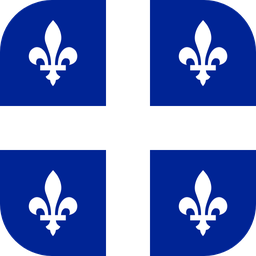

Les Québécois De MinecraftSur PC, sur console ou sur téléphone : tout le monde joue ensemble. Survie, mini-jeux et tournages de vidéos.
Clique sur le gros bouton blanc, puis ouvre le fichier téléchargé et suis l'installation.
Ouvre Les Québécois De Minecraft et connecte-toi avec ton compte Microsoft, celui avec lequel tu as acheté Minecraft.
La première fois, le téléchargement prend quelques minutes. Ensuite, le jeu s'ouvre et t'amène directement au spawn.
C'est normal : Windows affiche ça pour tous les petits programmes qu'il ne connaît pas encore. Ce n'est pas un virus.
Si Chrome ou Edge bloque le téléchargement : clique sur les trois points à côté du fichier, puis sur Conserver.
Dans Minecraft : Jouer, onglet Amis, puis Ajouter un ami.
Cherche ce nom :
Le serveur accepte ta demande tout seul. Ça peut prendre une minute.
Retourne dans l'onglet Amis : le serveur apparaît dans les parties qu'on peut rejoindre. Sélectionne-le et clique sur Rejoindre.
Minecraft doit être à jour et connecté à ton compte Microsoft. Sur PlayStation et Switch, le jeu en ligne peut demander un abonnement (PS Plus, Nintendo Switch Online).
Tu as un compte enfant ? Un parent doit autoriser le jeu multijoueur, le jeu multiplateforme et les amis dans Microsoft Family Safety (ou dans les paramètres de confidentialité Xbox), sinon le serveur n'apparaîtra pas.
Dans Minecraft : Jouer, onglet Serveurs, puis tout en bas Ajouter un serveur.
Nom : ce que tu veux. Adresse :
Port :
Enregistre, puis touche le serveur pour le rejoindre. Accepte le pack de textures si le jeu te le propose.
La version « Minecraft pour Windows » (Bedrock) se connecte de la même façon, avec l'adresse et le port ci-dessus.
Le serveur est privé. Demande à un admin de t'ajouter, en lui donnant ton pseudo (ton gamertag si tu joues sur console, téléphone ou tablette).
Il est gratuit et ce n'est pas un virus : son code est public sur GitHub, et le fichier est fabriqué automatiquement à partir de ce code. Il te faut quand même ton propre compte Minecraft.
Oui : dans Minecraft Java, va dans Multijoueur et ajoute l'adresse du serveur. Le launcher installe en plus les mods qui rendent le jeu plus fluide et te connecte directement.
Le launcher n'existe pas encore sur Mac. Tu peux jouer avec Minecraft Java en ajoutant l'adresse du serveur dans Multijoueur.
Dans le launcher : ⚙️ Paramètres, puis Diagnostic, puis Copier le rapport. Envoie-le à un admin avec une capture d'écran du message d'erreur.